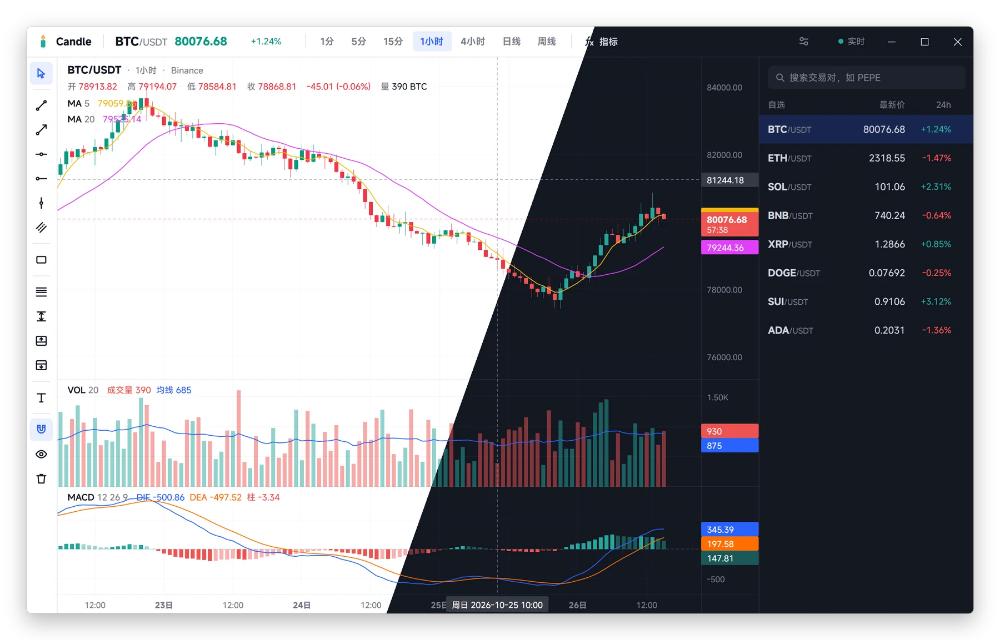

多市场行情
查看 Binance 现货与永续、CME 期货和美股；市场可用性取决于数据源。
Windows/macOS 开源行情图表工具，支持 Binance 现货与永续、CME 期货和美股，提供技术指标、画线及盈亏比分析，无需账号和 API Key。
Windows / macOS · MIT

查看 Binance 现货与永续、CME 期货和美股；市场可用性取决于数据源。
均线、趋势及震荡指标，配合画线和多空盈亏比工具分析行情。
拖动缩放、十字光标、多窗格与深浅主题，Go + MyGo 原生界面。
在 Releases 选择与你的操作系统和处理器相符的安装包，按仓库中的步骤启动。首次使用前请阅读权限说明、配置要求和已知限制。
查看发布版本与更新记录无需注册，也不需要自行提供 API Key。行情依赖第三方数据源和网络连接。
这是行情展示和分析工具，不是交易执行平台，也不提供投资建议。
不同市场数据源的更新频率和延迟不同，且可能发生限流或中断。不要将显示价格视为交易所承诺的实时报价。